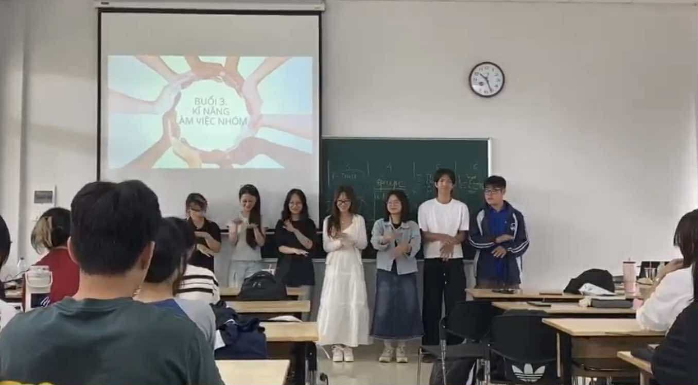
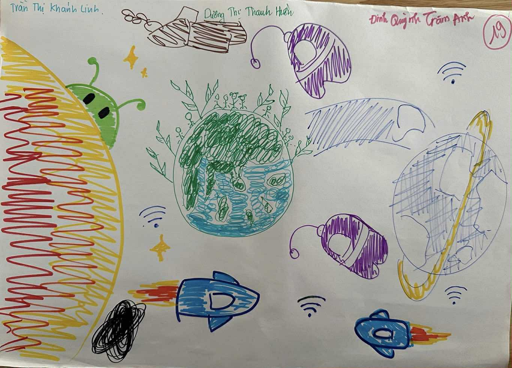
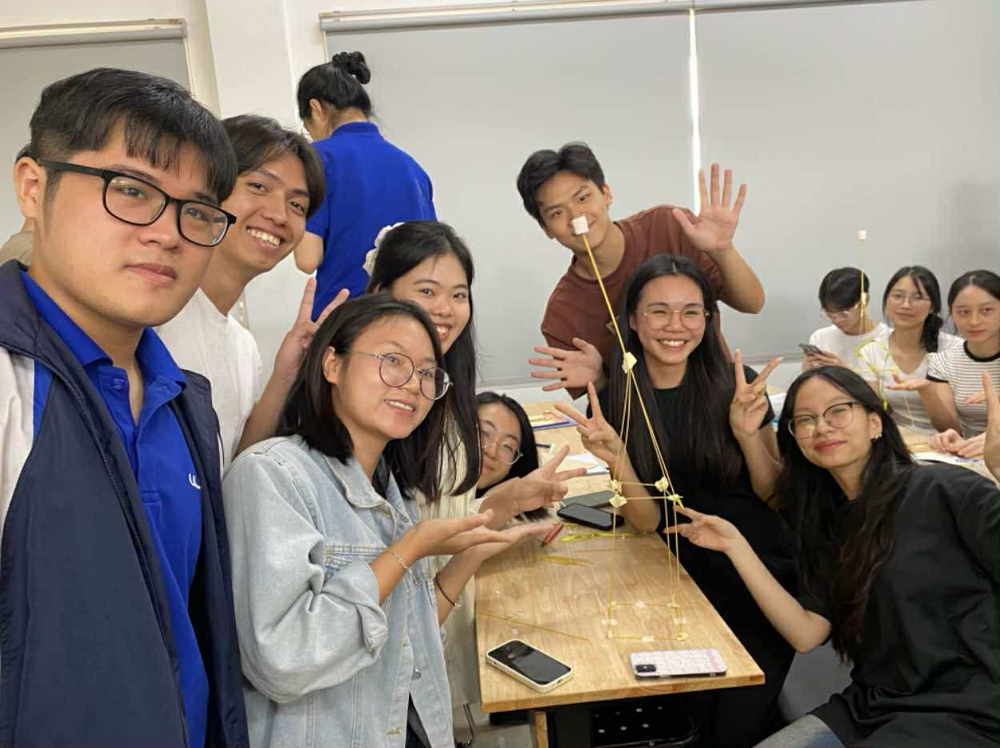

Week 3
Hoạt động 1 - Biên đạo và trình diễn ca khúc APT trong 8 phút

Ngay khi cô công bố thử thách, em đã có chút hoang mang. 8 phút để biên đạo và trình diễn một ca khúc – nghe thì đơn giản, nhưng thực sự là một áp lực khi phải phối hợp cùng các bạn, mỗi người lại có một phong cách riêng. Tuy nhiên, chính sự gấp gáp ấy lại buộc chúng em phải bỏ qua những tính toán cầu toàn, nhanh chóng chia sẻ ý tưởng và bắt tay vào thực hiện.
Em học được rằng sáng tạo đôi khi không cần sự chuẩn bị quá lâu dài, mà nảy sinh mạnh mẽ nhất trong những khoảnh khắc gấp rút, khi tất cả cùng tập trung vào một mục tiêu chung. Kết quả tuy không hoàn hảo, nhưng lại mang lại tiếng cười, sự gắn kết và tinh thần đồng đội.
Hoạt động 2 - Vẽ một câu chuyện trong sự im lặng

Em chợt nhận ra rằng sáng tạo không chỉ là sự bùng nổ cá nhân, mà còn là quá trình “đồng sáng tạo” – nơi mỗi người góp một mảnh ghép để tạo thành bức tranh lớn hơn. Bài học em rút ra là: sự im lặng không đồng nghĩa với khoảng cách, đôi khi chính sự im lặng lại mở ra cơ hội lắng nghe và cảm nhận nhau sâu sắc hơn. Trong làm việc nhóm, không chỉ lời nói, mà sự tinh tế, thấu hiểu và tôn trọng cũng là chìa khóa để đồng hành cùng nhau.
Hoạt động 3 - Thử thách kẹo dẻo

Đây là hoạt động thử thách cả tư duy lẫn sự kiên nhẫn. Với vài cây mỳ Ý, một cuộn băng keo, một sợi dây và một viên kẹo marshmallow, nhóm em phải xây dựng một công trình cao nhất có thể. Nghe thì đơn giản, nhưng khi thực hiện mới thấy khó khăn chồng chất. Cấu trúc liên tục đổ sập, viên kẹo marshmallow tưởng nhẹ nhàng nhưng lại là “gánh nặng” khiến công trình dễ sụp đổ. Em và các bạn đã không ít lần thất bại, nhưng chính sự thử – sai – làm lại ấy khiến em nhớ mãi. Sáng tạo không bao giờ là con đường thẳng, mà luôn là chuỗi vòng lặp của thử nghiệm và điều chỉnh.
Em hiểu rằng: thay vì cố gắng nghĩ ra kế hoạch hoàn hảo ngay từ đầu, đôi khi tốt hơn là bắt tay vào làm, chấp nhận sai, và học từ những thất bại nhỏ.
Hoạt động 4 – Chuyển ngữ đã dạy em một điều tưởng đơn giản mà hóa ra rất quan trọng:
không chỉ có “ý tưởng” mới là sáng tạo, mà ngay cả cách chúng ta trình bày, truyền tải ý tưởng đó cũng là một dạng sáng tạo. Một câu khô khan, cứng nhắc có thể làm người khác thờ ơ, nhưng nếu được biến đổi thành câu văn mềm mại, giàu cảm xúc thì sẽ khơi gợi sự chú ý, đồng cảm và truyền cảm hứng. Em nhận ra rằng sáng tạo trong ngôn ngữ không phải là thay đổi nội dung, mà là thổi hồn, để câu chữ trở nên gần gũi và có sức sống hơn. Và cũng từ đó, em hiểu: sáng tạo là nghệ thuật kết nối, biến cái khô khan thành cái chạm đến trái tim.
Hoạt động 5 – Thấu cảm theo cặp khép lại buổi học bằng một dư vị ấm áp.
Khi được bạn lắng nghe và đồng thời lắng nghe bạn, em cảm thấy sự kết nối chân thành vô cùng rõ rệt. Mỗi người đều có những suy nghĩ, câu chuyện riêng, và chỉ cần ta cho họ một không gian an toàn để chia sẻ, thì giữa hai tâm hồn có thể hình thành một sợi dây đồng cảm mạnh mẽ. Em rút ra rằng sáng tạo không chỉ dừng lại ở sản phẩm hay ý tưởng, mà còn ở cách ta xây dựng sự thấu hiểu và niềm tin trong các mối quan hệ.
Sau tất cả, em nhận thấy buổi học hôm nay không chỉ đơn thuần là một chuỗi hoạt động, mà là một hành trình “thức tỉnh”.